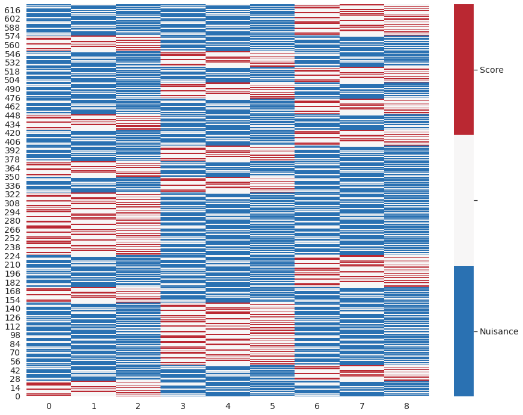

Note
-
Download Jupyter notebook:
https://docs.doubleml.org/stable/examples/double_ml_multiway_cluster.ipynb.
[1]:
%matplotlib inline
Multiway Cluster Robust DML¶
This example shows how the multiway cluster roboust DML (Chiang et al. 2020) can be implemented with the DoubleML package. Chiang et al. (2020) consider double-indexed data
\begin{equation} \lbrace W_{ij}: i \in \lbrace 1, \ldots, N \rbrace, j \in \lbrace 1, \ldots, M \rbrace \rbrace \end{equation}
and the partially linear IV regression model (PLIV)
\[\begin{split}\begin{aligned}
Y_{ij} = D_{ij} \theta_0 + g_0(X_{ij}) + \epsilon_{ij}, & &\mathbb{E}(\epsilon_{ij} | X_{ij}, Z_{ij}) = 0, \\
Z_{ij} = m_0(X_{ij}) + v_{ij}, & &\mathbb{E}(v_{ij} | X_{ij}) = 0.
\end{aligned}\end{split}\]
TODO: Add a few more details and the reference! https://arxiv.org/pdf/1909.03489.pdf
[2]:
import numpy as np
import pandas as pd
import matplotlib.pyplot as plt
from matplotlib.colors import ListedColormap
import seaborn as sns
from sklearn.model_selection import KFold, RepeatedKFold
from sklearn.base import clone
from sklearn.ensemble import RandomForestRegressor
from sklearn.linear_model import LinearRegression
from doubleml import DoubleMLData, DoubleMLPLIV
from doubleml.double_ml_resampling import DoubleMLMultiwayResampling
from doubleml.datasets import make_pliv_multiway_cluster_CKMS2019
Simulate multiway cluster data¶
We use the PLIV data generating process described in Section 4.1 of Chiang et al. (2020).
[3]:
# Set the simulation parameters
N = 25 # number of observations (first dimension)
M = 25 # number of observations (second dimension)
dim_X = 100 # dimension of X
obj_dml_data = make_pliv_multiway_cluster_CKMS2019(N, M, dim_X)
[4]:
# The data comes with multi index for rows (tuples with two entries)
obj_dml_data.data.head(30)
[4]:
| X1 | X2 | X3 | X4 | X5 | X6 | X7 | X8 | X9 | X10 | ... | X94 | X95 | X96 | X97 | X98 | X99 | X100 | Y | D | Z | ||
|---|---|---|---|---|---|---|---|---|---|---|---|---|---|---|---|---|---|---|---|---|---|---|
| 0 | 0 | 0.159195 | -0.278713 | 1.098247 | 0.605098 | -0.357951 | -0.775287 | -0.592452 | -0.248722 | 0.409787 | -1.238529 | ... | -0.478002 | -0.002180 | -0.625664 | 0.308908 | 0.487543 | 0.603647 | 0.316099 | 2.348039 | 1.553782 | 0.753478 |
| 1 | 0.277257 | 0.214213 | 1.481911 | -0.198639 | -0.267243 | -1.361687 | 0.239873 | 0.079430 | 0.254715 | -0.338012 | ... | -0.298975 | -0.848430 | 0.130902 | 0.329283 | -0.022092 | 0.113994 | 0.727655 | 3.056847 | 2.594468 | 1.320021 | |
| 2 | -0.715959 | 0.106205 | -1.209130 | -0.965673 | -1.671281 | -1.541293 | -0.913578 | 0.467954 | 2.176417 | 0.773856 | ... | -0.254415 | 0.414341 | 0.434749 | 0.567429 | 0.515598 | 0.675033 | 1.195279 | -0.370149 | -0.867409 | -0.282836 | |
| 3 | -0.327615 | 0.555267 | -0.072076 | 0.272042 | -0.401068 | -0.180763 | -0.136587 | -0.344864 | -0.588551 | 0.213609 | ... | -0.456134 | -0.934468 | 0.675657 | 0.626013 | 0.476054 | 0.702174 | 0.184056 | 0.358041 | 0.094644 | 0.473087 | |
| 4 | -0.718064 | -0.039038 | 0.721883 | -0.722617 | -0.166538 | -0.209791 | 0.258250 | 0.300460 | 0.222336 | 0.849543 | ... | -0.026570 | -0.744251 | -0.724422 | 0.724389 | 1.038494 | 0.682435 | 0.028340 | 0.960990 | 0.771726 | 0.396168 | |
| 5 | -0.613036 | -0.057615 | -0.350878 | 0.190904 | -0.946041 | -0.005162 | 0.553872 | 1.197209 | 0.966421 | -0.010801 | ... | -1.041324 | -0.329990 | -0.920182 | 0.429927 | 0.486652 | -0.072840 | 0.206426 | 0.683064 | 1.135066 | 1.176418 | |
| 6 | 0.331171 | -0.013305 | -0.141984 | -0.264674 | 0.088236 | 0.315794 | -0.138805 | 0.410637 | 1.661515 | 0.858254 | ... | -0.641158 | 0.339365 | -0.912980 | -0.225132 | 1.245295 | 0.282891 | 0.255823 | 1.408339 | 0.892875 | 0.647370 | |
| 7 | -0.695222 | 0.069177 | -0.138662 | -0.220585 | -0.308984 | -0.947251 | 0.126256 | 0.975560 | -0.526812 | -0.924322 | ... | -0.052957 | -0.554234 | -0.829167 | 0.093917 | -0.061610 | 0.319532 | 0.937860 | -3.257391 | -1.740677 | -0.869293 | |
| 8 | 0.738342 | 0.960363 | 0.025879 | 0.667761 | -0.662849 | 0.221865 | -0.008435 | -0.561055 | 1.469325 | 1.133269 | ... | -1.352038 | 0.003479 | -0.862751 | -0.328521 | 0.848774 | 0.478611 | 0.027442 | 2.805008 | 1.979092 | 1.743746 | |
| 9 | 0.249206 | 0.440292 | 0.213227 | 0.610834 | -0.506087 | -0.565710 | 0.216336 | 0.414938 | 0.541059 | -0.759390 | ... | 0.138536 | 0.540379 | -0.425908 | -0.512691 | 0.551153 | 0.194662 | 1.061605 | 0.733903 | 1.005298 | 0.457591 | |
| 10 | -0.071155 | -0.055188 | -0.046924 | 0.555346 | -1.181361 | -0.624691 | 0.088041 | -0.034236 | 0.182905 | 0.354626 | ... | -0.763868 | -0.590709 | 0.143693 | 0.118660 | 0.216688 | -0.107372 | 0.683909 | 1.470660 | 1.548858 | 0.246954 | |
| 11 | 0.271106 | 0.316015 | 0.477670 | -0.209210 | -0.777854 | -0.841503 | 0.147118 | 0.016308 | -0.558226 | -0.160918 | ... | 0.168473 | -0.250820 | 0.193859 | 0.552381 | -0.366721 | -0.458537 | 1.338540 | 2.961162 | 1.850010 | 0.198980 | |
| 12 | 0.459195 | 0.838068 | 0.015688 | 0.348630 | 0.350344 | -1.034582 | 0.675720 | 1.088394 | 0.760319 | -0.478139 | ... | -0.832504 | -0.633348 | 0.346576 | -0.258248 | 0.666911 | 0.228167 | 1.067651 | 3.317666 | 2.775096 | 2.021511 | |
| 13 | -0.081223 | 0.607695 | 0.917332 | -0.390544 | 0.323078 | -1.392015 | 0.050997 | 0.223646 | 1.566453 | -0.032130 | ... | -0.125651 | -0.289469 | -0.016973 | -0.284338 | 0.252243 | 0.563796 | 0.233473 | 1.575826 | 1.142834 | 0.895132 | |
| 14 | -0.183997 | -0.559264 | -0.825798 | 0.625542 | 0.117551 | -0.443081 | -0.272735 | 0.368142 | 0.774660 | 0.972944 | ... | -0.130018 | 0.282264 | -0.403938 | 0.650401 | 0.362088 | 0.276628 | 0.627945 | 0.309017 | 1.530694 | 1.374273 | |
| 15 | 0.132364 | -0.314817 | -0.063932 | 0.274996 | -0.293746 | -0.553720 | -0.356412 | 0.339244 | 0.885478 | -0.025809 | ... | -0.678021 | -0.512665 | -0.180171 | 0.387893 | 0.398482 | 0.257716 | 0.038816 | 0.040231 | 0.771000 | 0.717498 | |
| 16 | 0.410669 | -0.265392 | -0.139910 | -0.110844 | 0.630162 | 0.188925 | 0.583057 | 1.195305 | 1.054166 | 0.559949 | ... | -0.847151 | 0.175621 | -0.536534 | 1.015176 | 0.287932 | 0.214076 | 0.036899 | 1.280816 | 1.078447 | 0.854035 | |
| 17 | 0.063590 | 0.518682 | 0.012566 | 0.063702 | -0.351301 | -1.269638 | 0.055170 | 0.124428 | -0.485787 | 0.184701 | ... | -0.573370 | -0.476942 | -0.609942 | -0.400779 | 1.170427 | 0.046549 | -0.261607 | 2.743241 | 1.560013 | 1.066838 | |
| 18 | -1.320417 | -0.095511 | 0.116887 | 0.011752 | -0.682386 | -1.542916 | -1.355140 | -1.013611 | 0.541733 | -0.195248 | ... | -0.688377 | 0.353260 | 0.533231 | 1.165518 | 1.522247 | 0.496692 | 0.485575 | -1.619785 | -0.882462 | -0.126926 | |
| 19 | -0.149609 | -0.383209 | 0.230169 | -0.007548 | -0.078401 | -0.487822 | 0.820234 | 0.443811 | 1.431410 | 0.868217 | ... | -0.243591 | 0.257929 | -0.211566 | -0.150861 | -0.442081 | -0.651611 | 0.092397 | 1.632110 | 0.878731 | 0.068281 | |
| 20 | 1.220064 | 0.378053 | -0.132811 | -0.950084 | -0.886422 | -0.136895 | -0.373441 | 0.895525 | 0.025885 | 0.487524 | ... | -0.519004 | -0.669028 | -0.656262 | -0.162828 | 0.008125 | -0.621890 | 1.966739 | 2.075499 | 1.501351 | 0.724654 | |
| 21 | 0.712117 | 0.650443 | 0.159347 | 0.024989 | -0.127036 | -0.058904 | 1.005819 | 0.278604 | 0.703989 | 0.433677 | ... | -0.748644 | -0.473435 | 0.660979 | 0.675560 | 0.169138 | -0.311136 | -0.514967 | 1.816650 | 0.935546 | -0.830361 | |
| 22 | 0.020171 | 0.723502 | 0.424246 | 0.788345 | 1.088751 | 0.018209 | -0.300529 | 0.814523 | 0.204205 | 0.378934 | ... | -0.514489 | -0.135252 | 0.093257 | 0.673632 | 1.030983 | 0.400877 | 0.340260 | 0.252526 | -0.138954 | -0.381071 | |
| 23 | 0.226015 | 0.449635 | -0.162723 | 0.200064 | 0.436882 | -0.040453 | 0.984343 | -0.079172 | -0.327955 | -1.067949 | ... | -0.762500 | -0.241548 | -0.210640 | -0.270302 | 0.231228 | -0.930667 | 0.510182 | 2.789702 | 2.256811 | 1.316034 | |
| 24 | -0.222424 | 0.184731 | 0.077573 | -0.307731 | -0.227670 | -1.293446 | 0.556096 | 0.530274 | 0.194421 | -0.185229 | ... | -0.078850 | -0.358989 | -0.628438 | -0.057654 | 1.185836 | -0.610851 | -1.518515 | -0.457694 | -0.330469 | -0.058525 | |
| 1 | 0 | -0.359046 | -0.043923 | -0.536363 | 0.713300 | 0.633500 | -0.027086 | 0.843137 | 0.199396 | 0.311438 | -0.660995 | ... | -0.160554 | -0.409459 | 0.279998 | 0.608892 | 0.490696 | 0.911554 | -0.294332 | -0.236820 | -0.205992 | 0.559612 |
| 1 | 0.228453 | 0.054533 | 0.080485 | 0.016816 | 0.051900 | -0.572223 | -0.144287 | 0.116517 | -0.727891 | 0.524929 | ... | 0.045866 | -1.455857 | -0.570681 | 0.920735 | 0.548763 | 0.896602 | -0.714801 | 0.026500 | -0.328186 | -0.034313 | |
| 2 | -0.054792 | -0.289909 | 0.286332 | 0.276520 | 0.181269 | -0.467469 | -0.019634 | 0.471707 | 0.423206 | 0.298475 | ... | -0.354276 | -0.728732 | 0.266358 | 1.097292 | 1.325017 | 1.640223 | 1.208208 | -0.302683 | -0.238046 | 0.723531 | |
| 3 | -0.497892 | 0.517581 | 0.676967 | -0.555374 | -0.385144 | 0.104466 | -0.146338 | -0.699516 | -0.479393 | -0.647126 | ... | 0.056300 | -0.771871 | -0.971454 | 0.046727 | -0.896317 | 0.256047 | 0.172767 | 0.889603 | 0.530264 | -0.254130 | |
| 4 | -0.909507 | -0.200059 | -0.252409 | -0.453495 | -0.236662 | 0.494150 | 1.096740 | -0.698013 | -1.856356 | 0.042184 | ... | 0.054939 | -0.821811 | -0.983979 | -0.169650 | 0.366805 | 0.543107 | 0.540880 | -2.841451 | -2.251380 | -0.892319 |
30 rows × 103 columns
Initialize the objects of class DoubleMLData and DoubleMLPLIV¶
[5]:
# Set machine learning methods for m & g
learner = RandomForestRegressor(max_depth=2, n_estimators=10)
ml_g = clone(learner)
ml_m = clone(learner)
ml_r = clone(learner)
# initialize the DoubleMLPLIV object
dml_pliv_obj = DoubleMLPLIV(obj_dml_data,
ml_g,
ml_m,
ml_r,
score='partialling out',
dml_procedure='dml1',
draw_sample_splitting=False)
Split samples and transfer the sample splitting to the object¶
[6]:
K = 3 # number of folds
smpl_sizes = [N, M]
obj_dml_multiway_resampling = DoubleMLMultiwayResampling(K, smpl_sizes)
smpls_multi_ind, smpls_lin_ind = obj_dml_multiway_resampling.split_samples()
dml_pliv_obj.set_sample_splitting([smpls_lin_ind])
[6]:
<doubleml.double_ml_pliv.DoubleMLPLIV at 0x7fc5f7371f10>
Fit the model and show a summary¶
[7]:
dml_pliv_obj.fit()
print(dml_pliv_obj.summary)
coef std err t P>|t| 2.5 % 97.5 %
D 1.079342 0.047952 22.50865 3.415122e-112 0.985357 1.173327
Visualization of sample splitting with tuple and linear indexing¶
[8]:
#discrete color scheme
x = sns.color_palette("RdBu_r", 7)
cMap = ListedColormap([x[0], x[3], x[6]])
plt.rcParams['figure.figsize'] = 15, 12
sns.set(font_scale=1.3)
Visualize sample splitting with tuples (one plot per fold)¶
[9]:
for i_split, this_split_ind in enumerate(smpls_multi_ind):
plt.subplot(K, K, i_split + 1)
df = pd.DataFrame(np.zeros([N, M]))
ind_array_train = np.array([*this_split_ind[0]])
ind_array_test = np.array([*this_split_ind[1]])
df.loc[ind_array_train[:, 0], ind_array_train[:, 1]] = -1.
df.loc[ind_array_test[:, 0], ind_array_test[:, 1]] = 1.
ax = sns.heatmap(df, cmap=cMap);
ax.invert_yaxis();
ax.set_ylim([0, M]);
colorbar = ax.collections[0].colorbar
colorbar.set_ticks([-0.667, 0, 0.667])
if i_split % K == (K - 1):
colorbar.set_ticklabels(['Nuisance', '', 'Score'])
else:
colorbar.set_ticklabels(['', '', ''])

Visualize sample splitting with linear indexing (one column per fold)¶
[10]:
df = pd.DataFrame(np.zeros([N*M, K*K]))
for i_split, this_split_ind in enumerate(smpls_lin_ind):
df.loc[this_split_ind[0], i_split] = -1.
df.loc[this_split_ind[1], i_split] = 1.
ax = sns.heatmap(df, cmap=cMap);
ax.invert_yaxis();
ax.set_ylim([0, N*M]);
colorbar = ax.collections[0].colorbar
colorbar.set_ticks([-0.667, 0, 0.667])
colorbar.set_ticklabels(['Nuisance', '', 'Score'])
